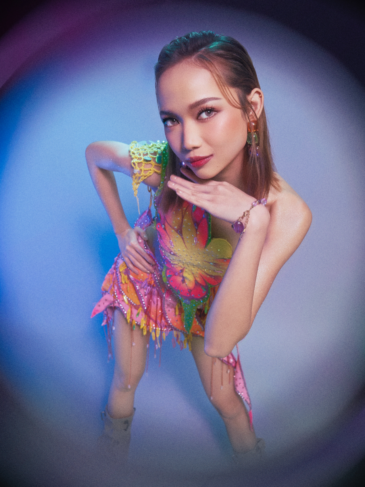

BINI GWEN

Name: Gweneth Llaguno Apuli
Stage name: Gwen
Born: June 19, 2003
Birthplace: Daraga, Albay, Philippines
Education: She graduated senior high school in May 2022 from the Tarlac Philippines Institute of Technology in Bulacan and is interested in pursuing Interior Design in college.
Family: Youngest of five siblings; only girl among her brothers. Her father passed away when she was four.
Early Activities:
- Began singing at age 3, joined voice workshops, school events, and local beauty pageants, showcasing her talent early on.
- Competed in the Pacific Teen Heartthrob 2019 pageant in Albay, where she won 1st runner-up, and also auditioned for *Pinoy Big Brother: Otso*, becoming a housemate.
- Joined Star Hunt Academy in 2019, where she trained in vocals, dance, and performance, preparing for her idol debut with BINI.
Position within BINI: Lead Vocalist and Lead Rapper
Media & Other Activities:
- Competed in the Pacific Teen Heartthrob 2019 pageant in Albay, where she won 1st runner-up, and also auditioned for *Pinoy Big Brother: Otso*, becoming a housemate.
- Joined Star Hunt Academy in 2019, where she trained in vocals, dance, and performance, preparing for her idol debut with BINI.
- Graduated high school while balancing her active career with BINI.
- She has talked publicly about wanting to help her family and further pursue finances, likely being driven by her childhood experiences (father's absence, financial challenges).
- She and fellow BINI member Jhoanna received Youth Leadership / Excellence Awards at their graduation.
Interests, Personality & Lifestyle:
- Loves fashion, especially collecting heels and doing make-up artistry, which matches her feminine and stylish image.
- Known for being confident, strong-willed, and outspoken, especially when it comes to setting boundaries and expressing her opinions.
- She's financially wise, openly talking about saving and investing to secure her family's future.
- Balances her busy idol life with personal growth — she values privacy, rest, and personal time outside the spotlight.
"I've never planted the idea in my head that I'm famous. In reality, I feel like I'm still a normal person."